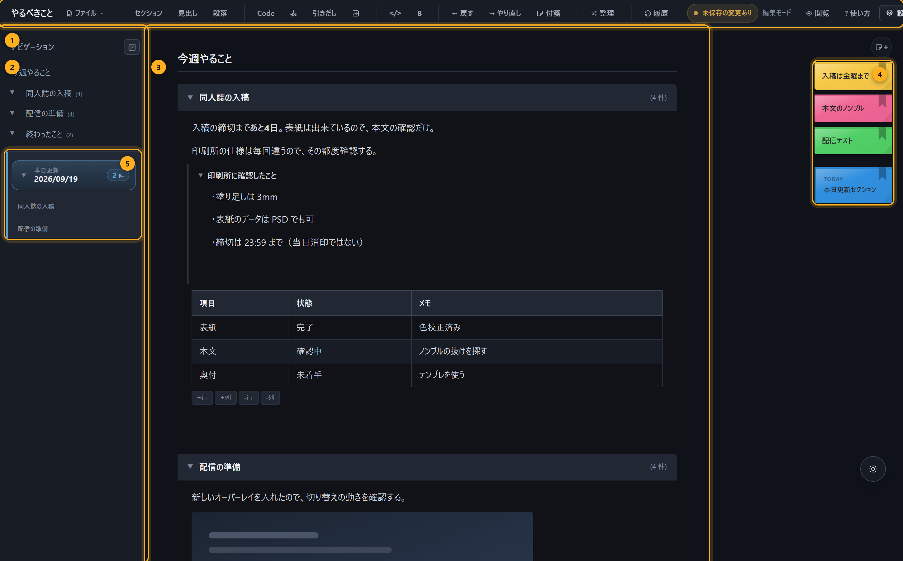
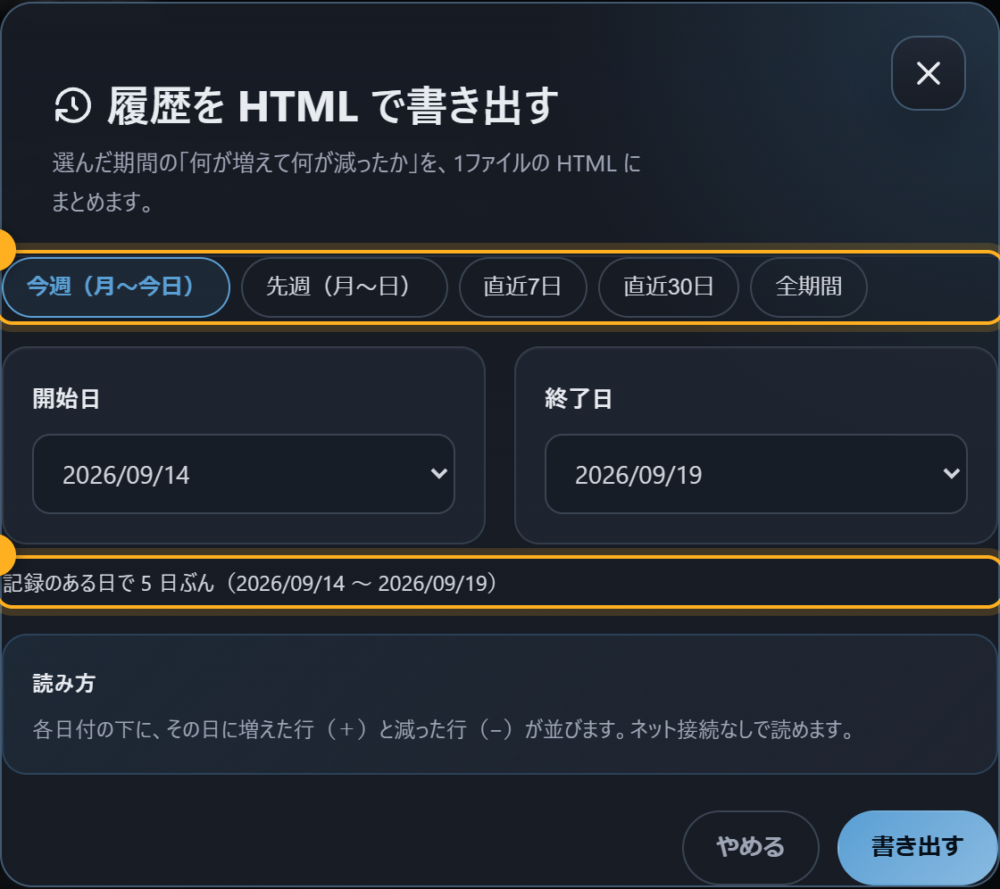
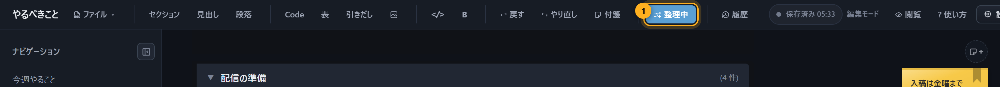
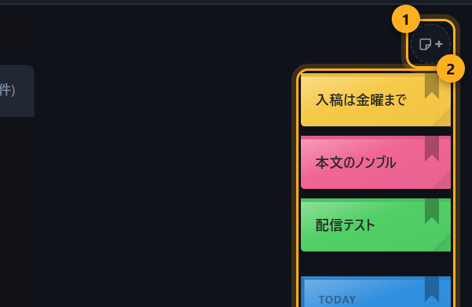

Windows用 / 買い切り / インストール不要
今日やったことが、
勝手にまとまる。
書くのはメモ。出てくるのは週報。
今日どのセクションに手を入れたかを自分で数えなくていい作業メモです。
お試し版は製品と同じプログラムがブラウザの中で動きます。 書いたものはそのブラウザの中だけに残り、こちらには送られません。 使い方を全部見る（無料）
PCに入れる版は Windows 10 / 11 環境構築ゼロ 既定でオフライン データはPCの中だけ

何が違うのか
メモアプリはもう足りています。これは「書いたものを後で提出する」ところまでを持ちます。
今日どこを触ったかが、自動で集まる
作業メモは膨らみます。週末に「今週なにをしたか」を思い出すのが一番面倒な作業です。
本日更新は、その日に書き換えたセクションだけを全ファイル横断で集めて1枚に出します。 思い出す作業が消えます。

期間を選ぶと、そのまま渡せる1枚になる
履歴から期間を選ぶと、1枚のHTMLファイルが出ます。 目次つき、画像は中に埋め込み済み。
相手はダブルクリックするだけ。アプリも通信も要りません。 そのまま添付して送れます。

終わった話を畳んでも、履歴は消えない
整理モードは「何を数えないか」を切り替えます。 終わった項目を畳んで視界から外しても、書いたものと履歴はそのまま残ります。 消すか残すかの二択で悩まなくなります。

付箋は、本文に混ぜたくない用事の置き場
画面の右端の + で付箋を足せます。 思いついた短い用事を、本文の流れを崩さずに置いておけます。
仕事ごとに作業ファイルを分けることもできます。 切り替えると履歴ごと切り替わるので、別の案件の記録が混ざりません。

ほかにできること
画面写真つきの説明が全部あります。買う前に読めます。
- 見出し・段落・引き出し（畳める箱）・表・コード・画像
- Markdown ファイルの読み込み
- 画像はファイルに埋め込まれるので、フォルダを動かしても壊れない
- 文字の種類と大きさの変更
- 自動保存と、書き換えの履歴
- 2台のPCで同じデータを使う設定（OneDrive などの共有フォルダ経由）
動作環境と、正直に言っておくこと
買ってから驚くことを減らしたいので、先に書きます。
| 対応OS | Windows 10 / 11（64bit） |
|---|---|
| 入れるもの | ありません。Node.js も Python も要りません（必要なものは中に入っています） |
| 導入 |
インストーラ版：実行して「次へ」を押すだけ。スタートメニューにアイコンが並び、
タスクバーにピン留めもできます。管理者権限は要りません（UAC は出ません）。 zip 版：展開して中の起動ファイルを押すだけ。インストールしたくない人・持ち運びたい人向け。 |
| やめるとき |
インストーラ版は「アプリと機能」から削除。書いたものは消えません（残る場所を最後に表示します）。 zip 版はフォルダを消すだけ。どちらもレジストリには何も書きません |
| 通信 |
既定ではしません。書いたものは全部あなたのPCの中に置かれます。 2回目の起動で「新しい版が出たらお知らせしますか？」と一度だけ聞きます。 「はい」を選んだときだけ、起動時に版番号だけを読みに行きます（書いた内容は送りません）。 いつでも設定で切り替えられます |
| 画面 | お使いのブラウザ（Edge / Chrome）で開きます。専用の窓として開きます |
| 大きさ | zip 約34MB / 展開後 約86MB |
インストーラを実行するとき、Windows が一度止めることがあります
個人が作ったソフトにはコード署名という有料の証明書が付いていません。 そのため Windows が「発行元が不明」として確認を挟むことがあります。壊れているわけではありません。
出たときは 詳細情報 → 実行 を押してください。一度通せば以後は出ません。
なお zip 版については、実際にネット経由で落とした状態を作って確かめたところ、 警告は出ず、ウイルス対策ソフト（Windows Defender）の検出も0件でした。 環境によって挙動は変わるので「絶対に出ない」とは言いません。
なお よくある質問 に、中身が何をしているかの確認方法を書いています。 信用できないものを「とりあえず実行」しないでください。それは正しい態度です。
買う
買い切りです。月額はありません。
| やるべきこと-editor | ¥1,500 買い切り（更新は無料） |
|---|
どちらもダウンロード商品です。購入後すぐ受け取れます。
日本からは BOOTH（pixiv の決済）が簡単です。itch.io は米ドル建てで、海外の方向けです。
先に試したい
ブラウザで試す（無料・登録なし・インストールなし）。
| ブラウザで試す版 | PCに入れる版（¥1,500） | |
|---|---|---|
| 機能 | 製品と同じ（同じプログラム） | 同じ |
| 保存先 | そのブラウザの中だけ | 自分のPCのフォルダ（ファイルとして残る） |
| 別のPC・別のブラウザ | 開けない | フォルダを共有すれば使える |
| 閲覧データを消したとき | 書いたものも消える | 残る |
| しばらく開かなかったとき | Safari・iPhone・iPad では7日で自動的に消えます（ホーム画面に追加すると対象外） | 残る |
| バックアップ | 自分で書き出す | フォルダをコピーするだけ |
| 費用 | 無料 | ¥1,500 買い切り |
機能を削った体験版ではありません。同じプログラムがそのまま動いています。 違いは保存先だけです。
Claude で作る人向けの、無料のツール
こちらは無料で、中身も公開しています。作っているものが違うので、上の製品とは別物です。
CbC Tools 無料・公開
Claude と一緒に作った常駐ツールが、フォルダのどこかに散らばって行方不明になる問題のための窓。 トレイにアイコン1個、窓1枚で「いまどれが生きているか」が分かります。
自分のツールを繋ぐ手順書（CONNECT.md）が入っているので、
それを Claude に読ませれば繋ぎ込みを任せられます。
Claude セッション盤面 無料・公開
Claude Code の会話を一覧で見て、ピン留めして、続きから開き直すための盤面。
CbC に繋いだ実例としても使えます。繋ぐ設定をそのまま同梱しています。
GitHub で見るよくある質問
- 本当に何も入れなくていいのですか
- はい。動かすのに必要な部品（Node.js）は中に同梱しています。 Windows のアカウントが管理者でなくても動きます（別のPCの標準ユーザーで実際に確かめました）。
- 書いたものはどこに保存されますか
- アプリのフォルダの中です。保存先は変えられます。クラウドには送りません。
- 通信していないことを自分で確かめられますか
-
できます。起動中にブラウザの開発者ツール（F12）のネットワークを見てください。
更新のお知らせを「いいえ」にしている状態では、外部への通信は0件です
（こちらでも実際に記録を取って確かめています）。
「はい」にすると、suto648.github.io/version.jsonへの1件だけが増えます。 それも開発者ツールにそのまま出るので、何をしているか隠れません。 わざとブラウザ側から通信しています。見えない場所で通信しないためです。 - 更新はどうやって知るのですか
-
2回目の起動で一度だけ「新しい版が出たらお知らせしますか？」と聞きます。
「はい」にすると、起動時に版番号を見に行き、新しければ画面の上に一行出ます。
送るものはありません。番号を読むだけです。
新しい版は、買ったところ（BOOTH / itch.io）から取り直してください。 追加のお支払いはありません。 - アンインストールは
-
インストーラ版は Windows の「アプリと機能」から削除できます。
書いたものは消しません。削除のあとに、残っている場所を画面に出します。
zip 版はフォルダを削除するだけです。どちらもレジストリには何も書きません。 - インストーラ版と zip 版、どちらを使えばいいですか
-
迷ったらインストーラ版です。スタートメニューに並び、タスクバーにピン留めでき、
パソコンの起動時に自動で開く設定も選べます。
zip 版は「インストールしたくない」「USBに入れて持ち歩きたい」「置き場所を自分で決めたい」人向けです。 中身は同じものです。 - Mac / Linux で動きますか
- いまは Windows だけです。
- 更新は有料ですか
- 無料です。買った人は新しい版を同じ場所から取り直せます。
- 2台のPCで同じメモを使えますか
- 使えます。データの置き場所を共有フォルダ（OneDrive など）にします。 ただし2台で同時に開かないでください。交代で使う前提の作りです。
- Markdown ファイルとして開けますか
- 読み込みはできます。保存の形式はこのアプリ専用です（見出しの畳み方や付箋を保つため）。 人に渡すときは HTML の書き出しを使ってください。